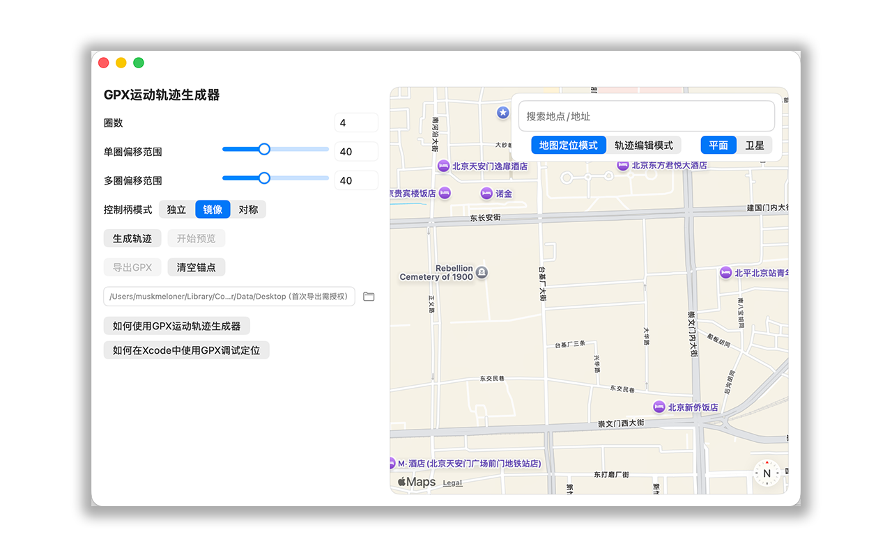
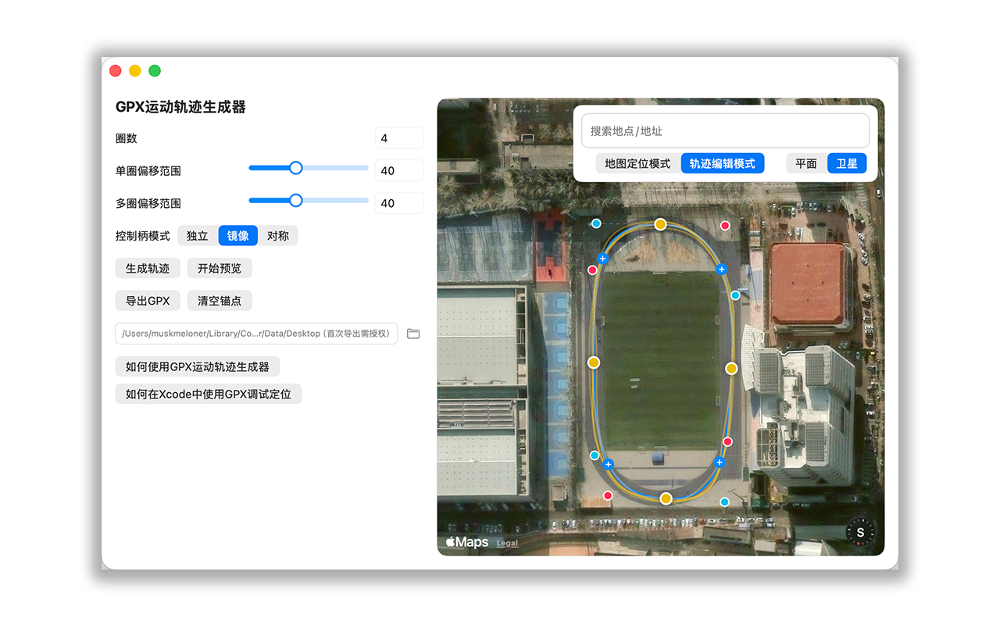
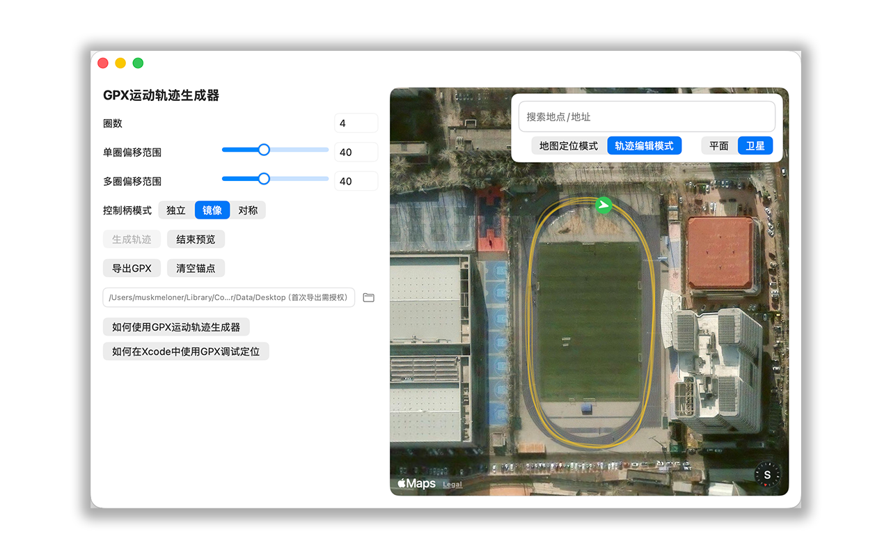

GPX运动轨迹生成器是一款 macOS 应用，用于在地图上绘制运动路线、生成轨迹预览，并导出 GPX 文件。
导出的 GPX 文件用于开发调试流程，例如在 Xcode 中使用 Simulate Location 测试定位相关功能。
GPX Motion Generator is a macOS app for drawing routes on a map, previewing generated movement tracks, and exporting GPX files for development and testing workflows.
功能概览 / Highlights
中文
在 Apple 地图上搜索地点并切换平面或卫星视图。
使用锚点和贝塞尔控制柄绘制路线。
按圈数、单圈偏移范围和多圈偏移范围生成轨迹。
预览生成轨迹和移动位置图标。
使用 macOS 标准保存窗口导出 GPX 文件。
English
Search locations on Apple Maps and switch between flat and satellite map styles.
Draw routes with anchor points and Bezier handles.
Generate tracks using laps, single-lap offset, and multi-lap offset options.
Preview generated tracks and the moving location marker.
Export GPX files through the standard macOS save dialog.
基本使用方式
在地图上搜索地点，或手动移动到需要绘制轨迹的位置。
切换到轨迹编辑模式。
点击地图放置锚点，至少添加 3 个锚点形成闭环路线。
拖动锚点和贝塞尔控制柄，调整路线位置和弯道形状。
设置圈数、单圈偏移范围和多圈偏移范围。
点击生成轨迹，并使用预览确认轨迹效果。
点击导出 GPX，通过 macOS 标准保存窗口选择文件名和保存位置。
详细教程
GPX轨迹生成器教程
在真实地图上画出基础曲线，生成带时间戳的 GPX 运动轨迹，再导出给支持 GPX 的开发工具使用。
基本流程
在右侧地图搜索或拖动到需要绘制轨迹的位置。
切换到轨迹编辑模式，点击地图添加锚点，至少 3 个锚点形成闭环。
拖动黄色锚点调整路线位置，拖动控制柄调整弯道形状。
设置圈数和偏移范围后，点击生成轨迹。
确认黄色生成轨迹符合预期后，点击导出 GPX。
圈数
圈数表示导出的轨迹围绕路线重复几圈。
例如圈数为 4 时，GPX 会包含 4 圈连续轨迹。
圈数越多，导出的点位和总运动时间也会增加。
GPX时间档位
GPX时间档位控制导出文件内部的时间戳密度。
默认 1 分钟档适合当前版本的基础测试节奏。
不同读取端处理 GPX 的方式可能不同，实际播放时间可能有差异。
偏移范围
单圈偏移控制每一圈内部轨迹的轻微摆动程度。
多圈偏移控制不同圈之间的整体分散程度。
数值越小越贴近原始曲线，数值越大变化越明显。
控制柄与地图模式
独立：入口控制柄和出口控制柄互不影响。
镜像：两侧控制柄保持相反方向和相同长度。
对称：同步方向，但保留另一侧原有长度。
地图定位模式用于移动、缩放和搜索地图。
轨迹编辑模式用于添加、拖动和删除锚点。
Xcode使用教程
用于开发调试时通过 Xcode 的 Simulate Location 读取 GPX 轨迹；不要用于绕过第三方 App 规则。
安装 Xcode
打开 Mac App Store，搜索 Xcode，点击获取并安装。
第一次打开 Xcode 时，按提示安装额外组件。
打开 Xcode 设置，进入 Accounts，登录 Apple ID。
准备 iPhone
用 USB 连接 iPhone 和 Mac，iPhone 上点击信任此电脑。
在 iPhone 设置中打开隐私与安全性，进入开发者模式并开启。
按系统提示重启 iPhone，重启后再次确认开启开发者模式。
创建调试项目
在 Xcode 选择 File > New > Project。
选择 iOS > App，填写任意项目名称。
Interface 选择 SwiftUI，Language 选择 Swift。
在 Signing & Capabilities 中选择你的开发团队。
运行设备选择 iPhone，然后点击运行按钮。
导入 GPX 文件
在本工具中生成轨迹并导出 .gpx 文件。
回到 Xcode，把导出的 .gpx 文件拖入项目导航栏。
如果出现选项窗口，可以勾选 Copy items if needed，并确保 iOS App target 被选中。
GPX 文件加入项目后，Xcode 才能在调试定位菜单中看到它。
调试定位
确保 iPhone 上的调试 App 正在由 Xcode 运行。
在 Xcode 菜单栏选择 Debug > Simulate Location。
选择刚导入的 GPX 文件名。
Xcode 会在当前开发调试会话中按 GPX 文件模拟定位。
停止调试、断开连接或选择 None 后，模拟定位会停止。
常见问题
如果看不到 iPhone，先解锁手机，并确认已经信任 Mac。
如果提示 Signing 错误，回到 Signing & Capabilities 选择 Team。
如果 Simulate Location 里没有 GPX 文件，确认 GPX 已加入 iOS 项目且 target 被勾选。
应用截图

地图定位模式

轨迹编辑模式

轨迹预览
获取帮助
如果你在使用过程中遇到问题，可以通过 GitHub Issues 页面反馈：
https://github.com/Meloner423/GPX-Motion-Generator-Support/issues
If you encounter any issues while using the app, please report them on the GitHub Issues page:
https://github.com/Meloner423/GPX-Motion-Generator-Support/issues
应用说明
本应用只负责生成并导出用户选择保存的 GPX 文件。
本应用不会连接 iPhone，不会直接修改设备定位，也不会控制第三方 App。
本应用不会收集、上传或分享用户创建的 GPX 文件。
This app only creates and exports GPX files saved by the user. It does not collect, upload, or share user-created GPX files.
常见问题
如果导出 GPX 失败，请确认已经在 macOS 标准保存窗口中选择了可写入的位置。
如果地图无法加载，请确认 Mac 已连接网络。
Privacy Policy
Privacy Policy